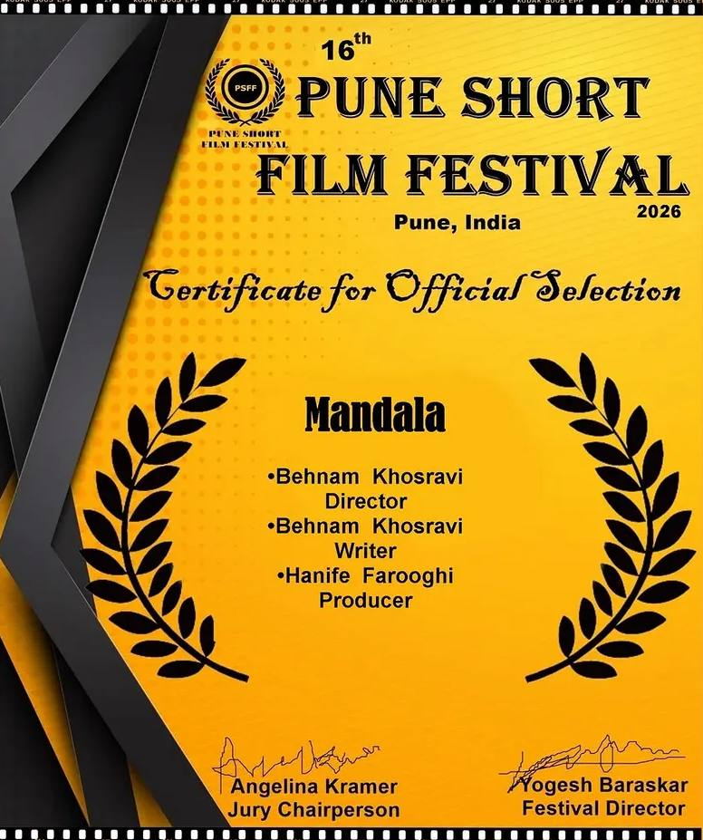
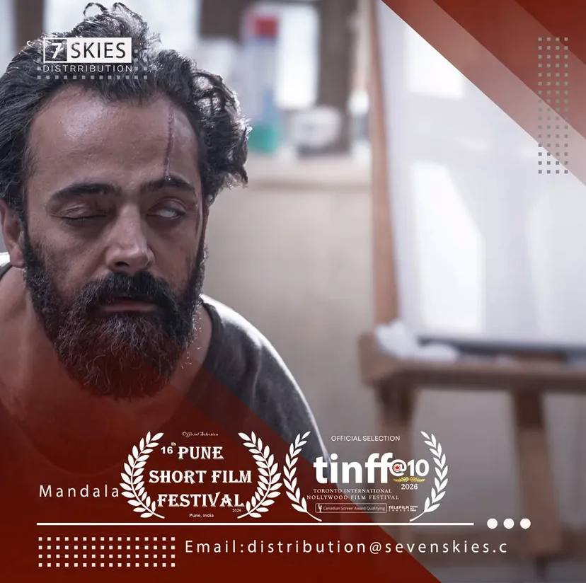
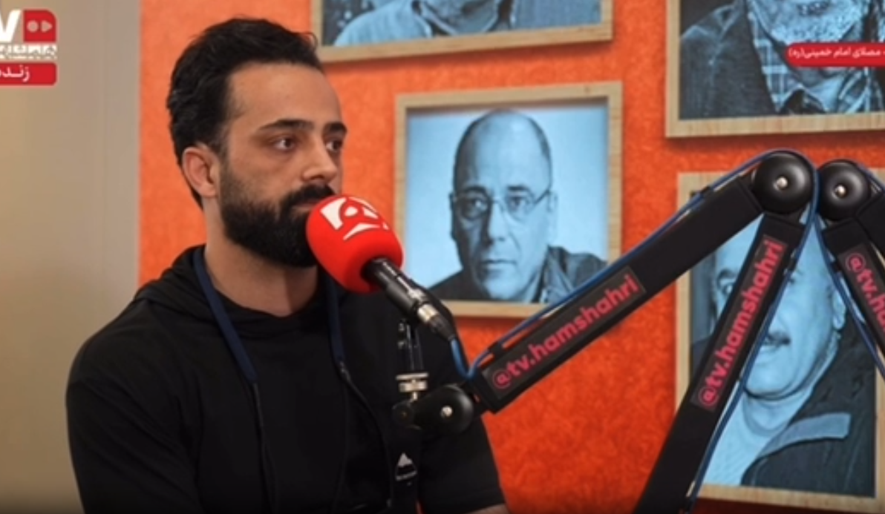

افتخار سینمای ایران
«ماندالا» بهنام خسروی؛ درخشش فیلم کوتاه ایرانی در جشنوارههای بینالمللی
فیلم کوتاه «ماندالا» ساخته بهنام خسروی، کارگردان، رماننویس و فیلمنامهنویس ایرانی، موفق شد
جایزه بهترین فیلم را از جشنواره بینالمللی Accolade
دریافت کند. این اثر همچنین نامزد بهترین کارگردانی در دهمین
جشنواره بینالمللی TINFF کانادا شده و در جشنواره
بینالمللی فیلم پونه هندوستان نیز حضور داشته است. برای مطالعه گفتگوی اختصاصی با
کارگردان روی این باکس کلیک کنید.
برنده جشنواره Accolade
نامزد بهترین کارگردانی TINFF
کانادا
حضور در جشنواره پونه هند
افتخار سینمای ایران
ماندالا بار دیگر درخشید؛ دومین جایزه بینالمللی برای فیلم کوتاه بهنام
خسروی
فیلم کوتاه «ماندالا» به نویسندگی و کارگردانی بهنام خسروی در چهارمین حضور بینالمللی خود،
موفق به کسب جایزه Golden Standard Award از
چهارمین دوره Stay Gold Film Festival شد.
نمایش این فیلم در بخش رسمی جشنواره، روز ۲۸ ژوئن ۲۰۲۶ برگزار شد و نتایج نهایی و برندگان
جشنواره در تاریخ ۴ جولای ۲۰۲۶ اعلام شدند. هیئت داوران این جشنواره، فیلم «ماندالا» را به دلیل
روایت تأثیرگذار، کیفیت هنری، خلاقیت و استانداردهای بالای فیلمسازی مستقل، شایسته دریافت این
جایزه دانستند.
آخرین اخبار
مشاهده همه ›اخبار سینمای ایران
مشاهده همه ›

نامزدی بینالملل
«ماندالا» نامزد بهترین کارگردانی در دهمین جشنواره بینالمللی فیلم
TINFF کانادا شد
۱۴۰۴

جشنواره هند
فیلم کوتاه «ماندالا» در جشنواره بینالمللی فیلم پونه هندوستان حضور
یافت
۱۴۰۴

اسکار ۲۰۲۵
انیمیشن کوتاه ایرانی «در سایه سرو» ساخته شیرین سوهانی و حسین ملایمی
اسکار ۲۰۲۵ را برد
اسفند ۱۴۰۳

جشنواره کن
جعفر پناهی با «یک تصادف ساده» نخل طلای کن ۲۰۲۵ را دریافت کرد؛ اولین
نخل طلای تاریخ سینمای ایران
خرداد ۱۴۰۴
ویدئو و تریلر
مشاهده همه ›
بهنام خسروی درباره ساخت «ماندالا» میگوید
«در سایه سرو» پس از اسکار؛ مصاحبه با سازندگان
سینمای جهان
مشاهده همه ›اسکار ۲۰۲۵
«آنورا» ساخته شین بیکر بهترین فیلم و کارگردانی اسکار ۲۰۲۵ را برد؛
مایکی مدیسون بهترین بازیگر زن
اسفند ۱۴۰۳
کن ۲۰۲۵
نخل طلای فیلم کوتاه کن ۲۰۲۵ به «خوشحالم که الان مردهای» اثر توفیق
برهوم رسید
خرداد ۱۴۰۴
انسی ۲۰۲۵
«آرکو» فرانسوی جایزه اصلی جشنواره انسی ۲۰۲۵ را برد؛ حضور ایران با
«در شب»
خرداد ۱۴۰۴
حضور بینالمللی سینمای ایران
مشاهده همه ›موفقیت بینالملل
فیلم «ماندالا» بهنام خسروی با کسب جایزه Accolade، جهانی شد
۱۴۰۴